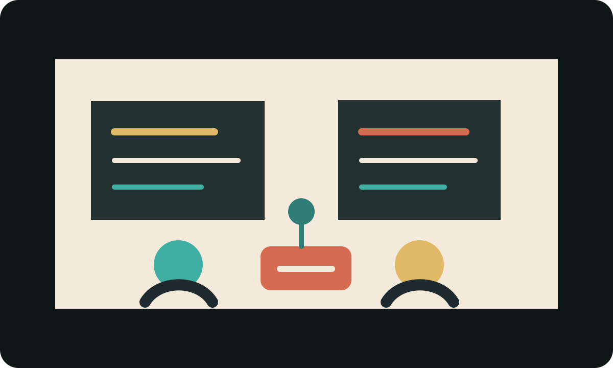

AI literacy and student anxiety
AI Is Not a Replacement Brain
AI literacy should be practical: students need to know when to ask AI for help, how to test what it gives back, and how to reject output that looks polished but does not fit the larger system.
Across the research I have scoped, the major implicit theme is that AI is best positioned when developers and engineers use it as a tool they can collaborate with, not as a machine to pump solutions out of. Shao and Ishengoma (2026) found that developers who actively review, accommodate, and confirm the correctness of AI-generated code are increasing their productivity more than those who simply accept the code without a second thought.
Jia makes essentially the same point from a practical angle. He compared AI coding tools to "having interns that you can ask for help." They are useful when they follow instructions, write syntactically correct code, and support exploration, but they may not give the best solution (Jia, personal communication, 2026). The comparison is useful because it does not give in to hype: an intern may be helpful, but their work still needs context, direction, and review.
Brandebusemeyer, Schimmer, and Arnrich (2025) similarly show that developers' experiences with generative AI depend on how they interact with it. Moderate use can speed up completion time and reduce cognitive load, while overreliance weakens those benefits. For students, that difference matters because using AI as an educational tool is not the same as depending on whatever answer it generates.
This is why AI literacy should become more visible in computer science education. Cerny (2024) argues that AI literacy is not just knowing how to use AI tools; it also involves evaluating AI-generated output, understanding limitations, and taking ownership of final decisions. For CS students, this should be treated as an extension of principles they already learn: testing, documenting, collaborating, evaluating, and being responsible for the final work.
The anxiety students feel
Farooqi et al. (2026) found that post-secondary computer science students are already experiencing job anxiety and uncertainty, especially around entry-level positions in web development and software engineering. Students are worried about a possible "AI takeover" in which the kinds of roles they are preparing for become automated before they even graduate.
That anxiety is understandable. If a tool can generate code with clean syntax in seconds, it makes sense that students would question their career choices or wonder which skills will still matter. But the better question is not only whether a job will be taken by AI. It is what parts of software engineering are changing, and how students can become harder to replace by learning judgment, context, and responsible evaluation.

What should universities do?
Smith (2024) explains that computer science educators are still figuring out how to incorporate AI into CS education without losing core fundamentals. Jia expressed a similar uncertainty, saying universities "know they have to teach AI," but may not yet know "the best way to teach AI" (Jia, personal communication, 2026).
One possible solution Jia suggested was a longer project-based structure across multiple years, where students continuously build, revise, and evolve a real software system. Instead of completing short assignments and moving on, students would experience what happens when software grows over time. They could use AI tools, but the project would become complex enough that AI could not simply solve everything for them.
The real learning would happen in the maintenance: debugging regressions, simplifying design, responding to users, and realizing that software engineering is not just about making something work once.